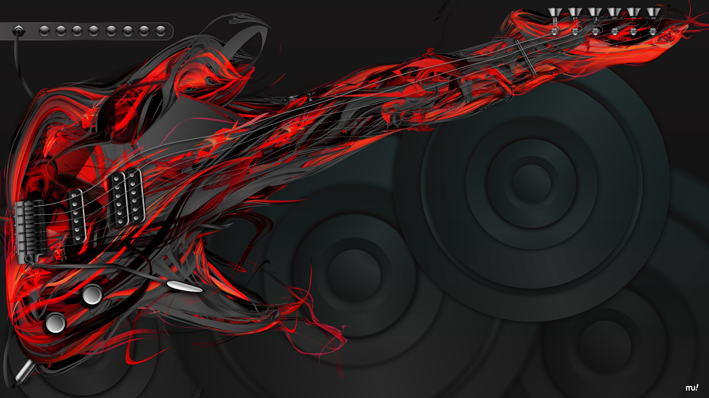
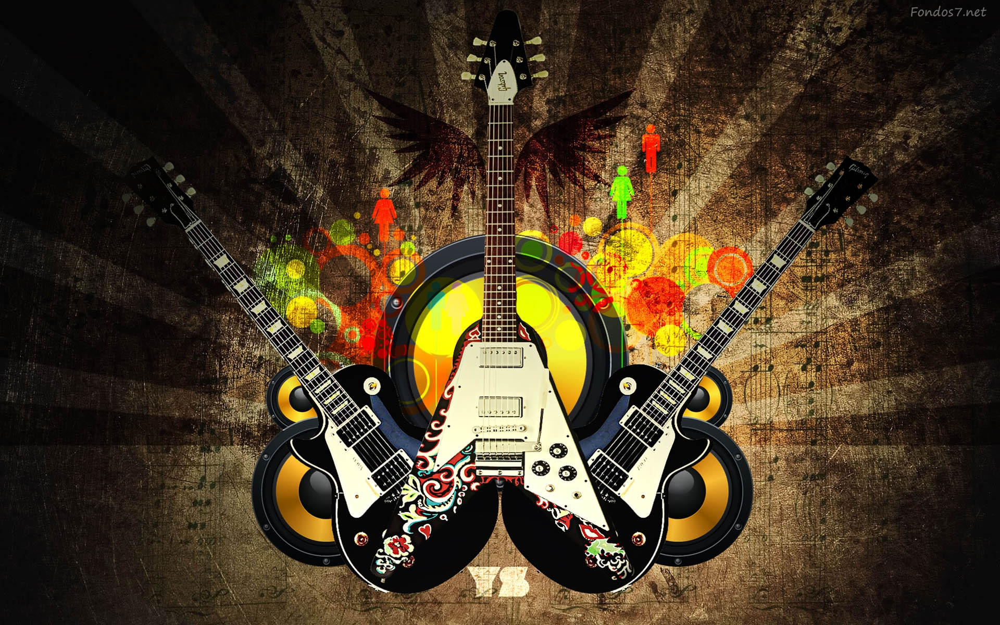

El heavy metal, «metal pesado», es un género musical que nació a mediados de los años sesenta y principios de los setenta
en el Reino Unido y en los Estados Unidos, cuyos orígenes provienen del blues rock, hard rock y del rock psicodélico.
Se caracteriza principalmente por sus guitarras fuertes y distorsionadas, ritmos enfáticos
los sonidos del bajo y la batería son más densos de lo habitual y por voces generalmente agudas.

La mejor pagina del ROCK

La guitarra eléctrica es un instrumento musical de seis cuerdas normalmente,
que utiliza el principio de inducción electromagnética para convertir las vibraciones por ende su sonido varia
de sus cuerdas de metal en señales eléctricas. El sonido de la guitarra se verá influido por el diseño y ubicación de las pastillas,
la escala y en menor medida por el puente y la cejilla, el uso de los círculos de la escala modificará el sonido de cada una de sus cuerdas.